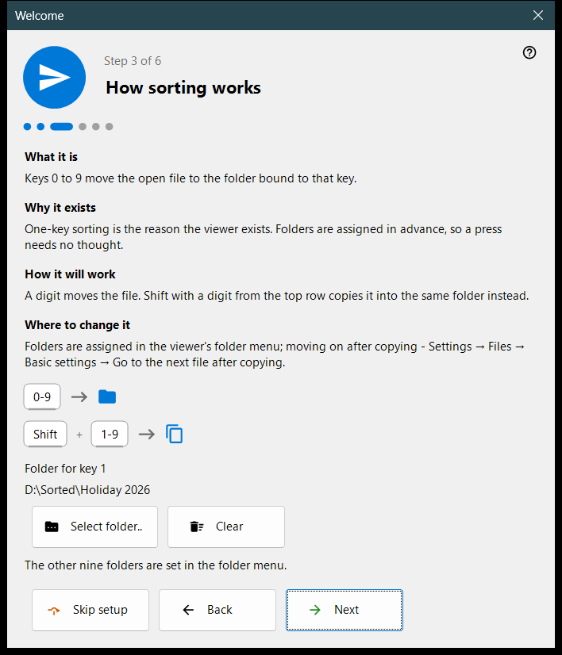
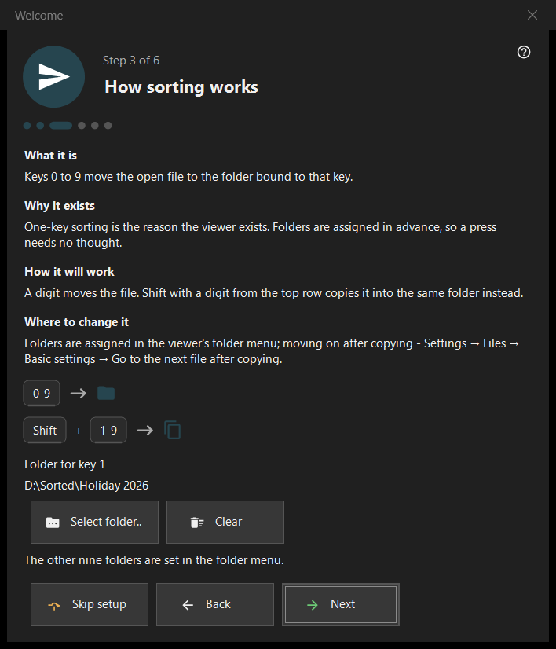

Welcome
Welcome
What this is for
The welcome steps set up the basics in a few minutes: language, appearance, the folder for key 1, deletion and file associations. They open on the first launch, from the button 'Welcome setup' on the empty viewer screen, and from 'Show the welcome steps again' on the 'General' page of Settings. They exist in the 64-bit version only.


In this order
- Choose the language.
- Pick the background scheme and the wheel action.
- Choose the folder for key 1.
- Read how deletion works.
- Set the file associations.
- Check the recap and press 'Finish'. 'Next' goes on, 'Back' returns, 'Skip setup' jumps to the last step.
The elements
Interface language
The window changes language at once as a preview; the viewer adopts it only on 'Next'. Closing the window without it restores the viewer's language.
Appearance
Choose the background scheme of the picture area (By corner, Black, White, By side, By top, By bottom) and the wheel: either it zooms at the cursor and the arrows browse, or it browses and Ctrl+wheel zooms. Both can be changed later on the 'Images' page of Settings.
How sorting works
The digits 0-9 move the current file to a folder; Shift plus a top-row digit copies it. Choose the folder for key 1 with 'Select folder..'; the other nine are set later on the 'Destinations' page of Settings. A folder that has vanished is reported: 'That folder is no longer available. Choose another one.'
Safe deletion
Shows how Del (Recycle Bin) and Shift+Del (permanent) work. The deletion options are on the 'Files' page of Settings.
Open pictures here
Lets this program open pictures and videos from Explorer. The step appears only when the program is not installed as the Microsoft Store package; it applies to your user account and needs no administrator rights.
All set
The recap lists each setting, its value and where to change it. If server components are installed on this PC, the block 'Servers on this PC' shows each one with its status and the button 'Open the manager'; with none installed the block is hidden.
Parts of a step
Each step has four parts: 'What it is', 'Why it exists', 'How it will work' and 'Where to change it'.